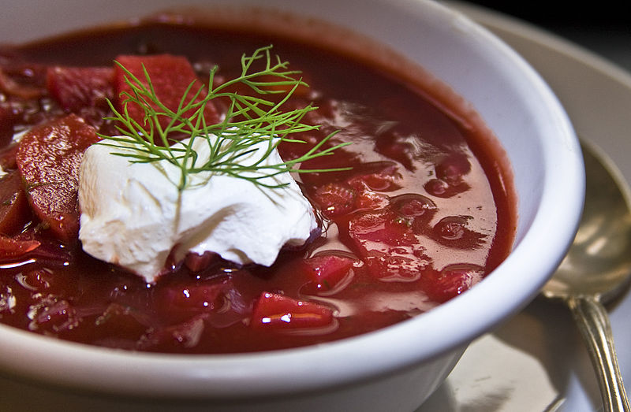

Borscht

Description
Borscht is a delicious and filling soup. Perfect for the colder months. Great comfort food.
Ingredients
- 1 tbsp vegetable oil
- 15g butter
- 1 large carrot, diced
- 1 celery stick, diced
- 1 onion, finely chopped
- 3 medium sized beetroots, peeled and diced
- 1 large waxy potato, diced
- 2 garlic cloves, finely chopped
- 1 1/2 litres good quality beef stock
- 1/2 purple cabbage, finely shredded
- 2 tomatoes, skinned, cored and chopped
- salt and freshly ground black pepper
- 1 dollop sour cream
- 1 tbsp finely chopped dill
Steps
- Heat the vegetable oil and butter in a large, heavy-bottomed saucepan.
Once melted, add the carrot, celery and onion and cook gently for a few minutes.
Add the beetroot, potatio and garlic. Fry for a couple of minutes until well coated and combined.
- Add the stock and season with salt and black pepper.
Bring to just below the boil and then simmer for 15 minutes.
- Add the cabbage and tomatoes.
Cover and leave to simmer for a further 20 minutes
- Serve the soup with dollops of sour cream and a sprinkling of dill.